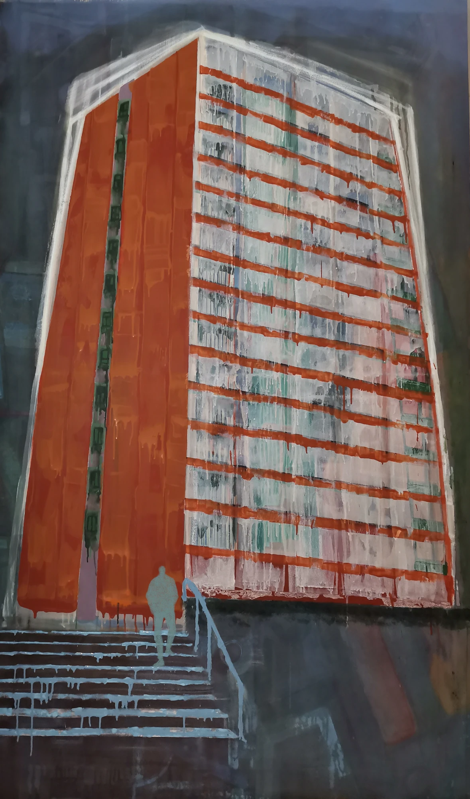
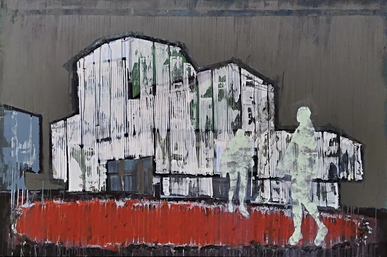
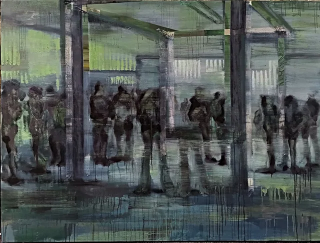

Skip to content
Dora Kuzmić
✳
The work
Artwork
More works
All works
↗
Menu +
Home
Digital works
Studies in red
From the studio
All works
Home
/
From the studio
/
City & structure
/
031
WORK
City & structure / 031
Tall building with red windows

View larger ↗
Tall building with red windows
Studio archive
05 / 08 in this series
View full series
↗
← Previous work

↗
White building on a dark ground
030
Next work →

↗
Figures waiting at a station
029
Close ×